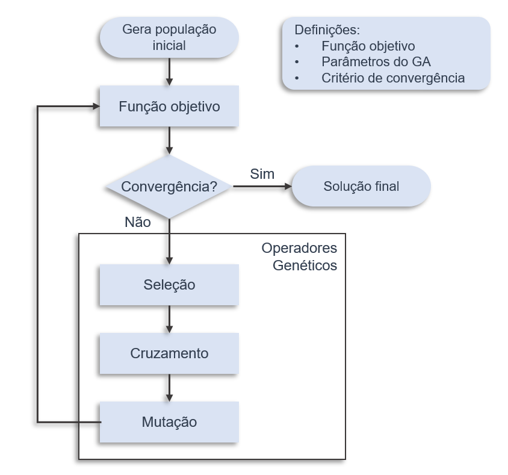

Combinando Algoritmo Genético e Simulação em R!

Photo by Vitaly Vlasov from Pexels
Neste post apresento a implementação de uma abordagem do tipo Otimização baseada em Simulação combinando Algoritmo Genético e Simulação de Eventos Discretos, e demonstro uma aplicação para balanceamento de linhas de produção. Antes de tudo vamos entender o que é essa abordagem e como pode ser utilizada.
Todo o código desse post está disponível em github.com/icaroagostino/SBO
Vamos começar…

Otimização baseada em Simulação (SBO)
Otimização baseada em simulação (do inglês simulation-based optimization - SBO) é uma estratégia que combina os pontos fortes dos algoritmos de otimização com métodos de simulação. Usualmente abordagens de otimização são adotadas para resolver problemas complexos que podem ser descritos matematicamente, mas falham, em muitos casos, em testar suas soluções em um ambiente realista que consiga considerar características probabilísticas que são observadas na realidade.
Aí que entra a simulação para resolver esse problema, modelos de simulação são capazes de representar a realidade de forma muito mais “fiel”, porém não são muito úteis para resolver problemas em que precisamos definir parâmetros ótimos.
Dessa forma, combinar os dois métodos é uma das solução mais sofisticadas que temos atualmente para resolver problemas de otimização, tendo como base a simulação para avaliar de forma interativa e estocástica nossas possíveis soluções.

Aqui a função objetivo comumente vista nas abordagens tradicionais é substituída pelo modelo de simulação, dessa forma iterativamente a abordagem SBO integra os dois métodos em cada ciclo de otimização.
Para esse post vamos adotar o Algoritmo Genético como método de otimização e a Simulação de Eventos Discretos como abordagem de simulação. Serão utilizados os pacotes Simmer e GA, ambos serão integrados de forma que cada conjunto de soluções gerados pela Otimização seja testado em um ambiente simulado que representa um
possível estado do sistema.
Algoritmos Genéticos (GA)
Nessa aplicação o coração da abordagem é o algoritmo genético (GA), se trata de uma heurística de otimização estocástica inspirada nos princípios básicos da evolução biológica e da seleção natural. De forma simplificada, precisamos visualizar uma solução possível para um problema como um indivíduo, que na inicialização do GA pode ser gerado aleatoriamente ou utilizando algum benchmark, um conjunto de indivíduos é uma população.

A adequação de cada indivíduo é avaliada por uma função objetivo e apenas os indivíduos mais aptos se reproduzem, passando a sua informação genética aos seus descendentes por meio dos operadores de mutação e de cruzamento. Importante lembrar que na nossa abordagem, a avaliação é feita por meio da simulação em substituição de uma equação matemática estática.
Assim, com o operador de seleção, o GA imita o comportamento dos organismos naturais num ambiente competitivo, no qual apenas os mais qualificados e a sua descendência sobrevivem. O cruzamento forma novos resultados de duas soluções “progenitoras” através da combinação de parte da informação genética de cada um.
A mutação é um operador genético que altera, de forma geral e aleatória, os valores dos genes de uma solução, permitindo escapar de ótimos locais. O processo de evolução termina com base em alguns critérios de convergência. Alternativamente, o GA é interrompido quando um número suficientemente grande de gerações passou sem qualquer melhoria no valor da função objetivo, ou quando uma estatística populacional atinge um limite pré-definido.
Tudo isso fica mais claro em um exemplo, então nas seções seguintes vamos criar um ambiente de simulação, definir as variáveis de decisão, conectar tudo e rodar.
Criando um ambiente de Simulação com Simmer
O pacote Simmer implementado em R fornece um framework para
simulação de eventos discretos com alta performance, implementado em
C++. O pacote funciona como uma API executando scripts de R, além
disso o pacote possui funções implementadas para computação paralela
permitindo múltiplas rodadas de simulação em diferentes núcleos.
Como caso teste para demonstrar a abordagem vamos implementar o caso relatado por Marichelvam, Prabaharan e Yang (2014), se trata de uma linha de produção de peças metálicas. O processo de produção possui 5 etapas: punching, bending, welding, power pressing e drilling. Cada etapa possui um número diferente de máquinas paralelas e idênticas.

O problema a ser resolvido nesse caso é o de balancemento da produção, ou seja definir de forma otimizada quantas máquinas em cada processo devem ser alocadas.
No R é preciso instalar as bibliotecas necessárias utilizando a função
install.packages(c("simmer", "simmer.plot", "GA")). Após isso vamos
carregar as bibliotecas e criar o ambiente de simulação.
# carregando os pacotes
library(simmer)
library(simmer.plot)
# Criando ambiente de simulacao
env <- simmer("model")
# Definindo a trajetoria
flowShop <- trajectory("flowShop") %>%
## add a Punching activity
seize("Punching", 1) %>%
timeout(function() rnorm(1, 10)) %>%
release("Punching", 1) %>%
## add a Bending activity
seize("Bending", 1) %>%
timeout(function() rnorm(1, 20)) %>%
release("Bending", 1) %>%
## add a Welding activity
seize("Welding", 1) %>%
timeout(function() rnorm(1, 15)) %>%
release("Welding", 1) %>%
## add a Pressing activity
seize("Pressing", 1) %>%
timeout(function() rnorm(1, 12)) %>%
release("Pressing", 1) %>%
## add a Drilling activity
seize("Drilling", 1) %>%
timeout(function() rnorm(1, 6)) %>%
release("Drilling", 1)
Os tempos atribuídos aos processos são arbitrários, para adicionar estocasticidade vamos utilizar a distribuição normal. Nesse ambiente de produção o processo segue um fluxo linear, dessa forma a trajetória construída foi adicionada ao ambiente de simulação. Agora vamos adicionar os recursos que serão o número de máquinas paralelas em cada etapa.
# Adicionando recursos
env %>%
add_resource("Punching", 2) %>%
add_resource("Bending", 2) %>%
add_resource("Welding", 2) %>%
add_resource("Pressing", 2) %>%
add_resource("Drilling", 2) %>%
add_generator("flowShop", flowShop, function() rnorm(1, 5, 1))
Como solução inicial duas máquinas paralelas foram adicionadas em cada etapa. Além disso, foi adicionado uma demanda estocástica com intervalo de 5 minutos seguindo uma distribuição normal para cada ordem de produção. Agora vamos simular 30 vezes esse cenário durante um dia (2 turnos totalizando 960 minutos) e calcular a utilização média dos recursos.
envs <- lapply(1:30, function(i) {
run(env,960) # Simula um dia (2 turnos)
})
Agora vamos calcular a utilização média dos recursos, para isso vamos
utilizar o pacote Simmer.plot que é uma extensão do Simmer para
plotagem de estatísticas e trajetórias.
plot(get_mon_resources(envs))

Como podemos ver, nossa solução inicial arbitrária com 2 máquinas paralelas em cada etapa não é adequada para a demanda atual, formando fila excessiva na etapa Bending e subutilizando as demais etapas. A utilização média dos recursos para esse cenário foi de 72.71%.
Utilizando algoritmo genético com o pacote GA
O pacote GA implementado em R fornece uma coleção de funções de
propósito geral para otimização usando algoritmos genéticos. A
otimização utilizando algoritmo genético pode ser executada
sequencialmente ou em paralelo para maior performance.
Para solucionar esse problema de balanceamento vamos utilizar Otimização
baseada em Simulação, integrando algoritmo genético ao ambiente de
simulação implementado. Vamos carregar o pacote GA e integrar a
simulação.
# carregando pacote
library(GA)
O pacote utiliza a função ga para buscar uma solução otimizada, para
isso precisamos passar para o algoritmo uma função objetivo, podendo ser
qualquer função definida em R, assim como as restrições e parâmetros
da otimização. Agora vamos encapsular a simulação criada em uma função
que recebe como argumento o número de máquinas paralelas em cada etapa e
no fim retorna a utilização média dos recursos.
# Criando uma funcao para simular o cenario
simular <- function(Punching, Bending, Welding, Pressing, Drilling){
# Criando ambiente de simulacao
env <- simmer("model") ; flowShop <- flowShop
# Adcionando recursos
env %>%
add_resource("Punching", round(Punching, 0)) %>%
add_resource("Bending", round(Bending , 0)) %>%
add_resource("Welding", round(Welding , 0)) %>%
add_resource("Pressing", round(Pressing, 0)) %>%
add_resource("Drilling", round(Drilling, 0)) %>%
add_generator("flowShop", flowShop, function() rnorm(1, 5, 1))
# Run com replicacoes
envs <- lapply(1:10, function(i) {reset(env) ; run(env,960)})
# Calculando a utilizacao media dos recursos
util <- get_mon_resources(envs) %>%
dplyr::group_by(.data$resource, .data$replication) %>%
dplyr::mutate(dt = .data$time - dplyr::lag(.data$time)) %>%
dplyr::mutate(in_use = .data$dt * dplyr::lag(.data$server / .data$capacity)) %>%
dplyr::summarise(utilization = sum(.data$in_use, na.rm = TRUE) / sum(.data$dt, na.rm=TRUE)) %>%
dplyr::summarise(utilization = mean(.data$utilization))
# Retorna a utilização média dos recursos
return(util[[2]] %>% mean)
}
Se você estiver utilizando a versão dplyr 1.0 ou maior, execute o código a aseguir para desativar os avisos da função summarise() ao longo da otimização:
options(dplyr.summarise.inform = FALSE)
Após o encapsulamento do cenário de simulação como uma função, basta parametrizar o algoritmo genético e executar a otimização. Aqui vamos assumir os seguintes parâmetros arbitrários:
- Tamanho da população: 10
- Quantidade máxima de iterações: 20
- Taxa de crossover: 80%
- Taxa de mutação: 10%
Como restrições vamos considerar o número mínimo de máquinas paralelas em cada etapa como 1 e o máximo como 5.
A integração entre a Otimização e Simulação acontecerá da seguinte forma: cada conjunto de soluções será testado em um ambiente de simulação que representa um estado possível do cenário real, retornando a utilização média dos recursos como KPI a ser maximizado. Em cada geração teremos 10 soluções possíveis, os melhores indivíduos de cada iteração sofrerão crossover e mutação gerando uma nova geração de soluções. Ao fim de 20 iterações a melhor solução será retornada maximizando a utilização dos recursos.
GA <- ga(type = "real-valued",
fitness = function(x) simular(x[1],x[2],x[3],x[4],x[5]),
lower = c(1,1,1,1,1),
upper = c(5,5,5,5,5),
popSize = 10,
maxiter = 20,
pcrossover = 0.8,
pmutation = 0.1)
# Melhor solucao
solution <- round(GA@solution) %>% print
## x1 x2 x3 x4 x5
## [1,] 2 4 3 2 1
plot(GA)

A solução que maximiza a utilização dos recursos é: [2, 4, 3, 2, 1] representando o número de máquinas paralelas em cada etapa respectivamente. Agora vamos analisar a qualidade dessa solução no cenário simulado.
env <- simmer("model")
env %>%
add_resource("Punching", solution[1]) %>%
add_resource("Bending", solution[2]) %>%
add_resource("Welding", solution[3]) %>%
add_resource("Pressing", solution[4]) %>%
add_resource("Drilling", solution[5]) %>%
add_generator("flowShop", flowShop, function() rnorm(1, 5, 1))
envs <- reset(env) ; run(env,960) # Simula um dia (2 turnos)
plot(get_mon_resources(envs))

Como podemos ver a solução encontrada pela Otimização baseada em Simulação foi capaz de maximizar a utilização média dos recursos, se apresentando como uma solução robusta capaz de lidar com a estocasticidade do sistema. A utilização média dos recursos nesse novo cenário foi de 98.73%.
O exemplo ilustrado demonstra a facilidade de integração da simulação e
otimização utilizando R, podendo se estender a cenários mais
complexos, desde que tenhamos variáveis de decisão e um KPI da simulação
a ser maximizado ou minimizado.
Aplicação em um artigo
As implementações desse exemplo geraram uma publicação no congresso ENEGEP 2020 que ocorreu online em outubro desse ano. Aproveito para deixar os links para a versão final do artigo, os slides e o vídeo da minha participação =).
- Artigo: SBO para balanceamento de Flow Shop híbrido: Implementação e aplicação em R
- Slides da apresentação: google slides
- Vídeo da apresentação no evento:
Bom, como falei no inicio do post toda essa aplicação está com código aberto nesse repositório do Github icaroagostino/SBO. O código é bem simples pois aproveita as implementações dos pacotes GA e Simmer, e também é bem genérico possibilitando extender para outras aplicações.
Referências
Se quiser se aprofundar eu sugiro como recurso inicial os artigos originais dos dois pacotes, vocês vão encontrar explicações teóricas, detalhes de implementação e muito mais.
Para citar os pacotes:
citation("simmer")
##
## To cite 'simmer' in publications use:
##
## Ucar I, Smeets B, Azcorra A (2019). "simmer: Discrete-Event Simulation
## for R." _Journal of Statistical Software_, *90*(2), 1-30. doi:
## 10.18637/jss.v090.i02 (URL: https://doi.org/10.18637/jss.v090.i02).
##
## If appropriate, use also:
##
## Ucar I, Hernández JA, Serrano P, Azcorra A (2018). "Design and Analysis
## of 5G Scenarios with simmer: An R Package for Fast DES Prototyping."
## _IEEE Communications Magazine_, *56*(11), 145-151. doi:
## 10.1109/MCOM.2018.1700960 (URL:
## https://doi.org/10.1109/MCOM.2018.1700960).
##
citation("GA")
##
## To cite 'GA' R package in publications, please use:
##
## Luca Scrucca (2013). GA: A Package for Genetic Algorithms in R.
## Journal of Statistical Software, 53(4), 1-37. URL
## http://www.jstatsoft.org/v53/i04/
##
## Luca Scrucca (2017). On some extensions to GA package: hybrid
## optimisation, parallelisation and islands evolution. The R Journal,
## 9/1, 187-206. https://journal.r-project.org/archive/2017/RJ-2017-008
##
Se quiser trocar uma ideia sobre esse assunto ou qualquer outro relacionado a R, o twitter é a plataforma que mais uso para me comunicar com a galera da comunidade. Aproveito e deixo minhas outras redes também.
Até o próximo post :D